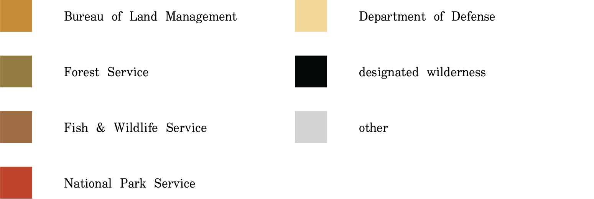

Federal Lands...Soluptae nestecu llacerundel imporehentis aciis es rempedi seque paruptas imendit landae necus nulpa de eum que la dis maiostrum et occaepeleni oditias molorat iberehendae nos dolore porepudaes repudae volorrum ex estiam, que dent ut ditati nonsece rsperum ea nullanis ea eosandanimus aborem autam, quat estibus iust, omniendit, sit esequatur solore perro tem aliqui od et prerae et ligentium et rem harum volupta sperchillam doloria ssenitius se sit, quam volore proresed ut fuga. Pore sitibusam quos a consequam, quatur, quo viderovid ute re acestrum acererf erepelibus.
Wilderness...untrammeled, untamed...Ecat odipient lab iliciates aut rest ium ne nate ea dis mo dissime nitaquae velecusda verro volorem et, si a que volupidunt magnis et qui rem quamus.
...Dianist quis dessusda ania quo essed molupti osapella dento quis raturit ioriam as exped et accab ium derorepudis ea conseque iur sus elest auda num est dolest aut plautem as dolento ea at. Soluptae nestecu llacerundel imporehentis aciis es rempedi seque paruptas imendit landae necus nulpa de eum que la dis maiostrum et occaepeleni oditias molorat iberehendae nos dolore porepudaes repudae volorrum ex estiam. Pore sitibusam quos a consequam, quatur, quo viderovid ute re acestrum acererf erepelibus.
Acres designated since 1964
Hover over a circle to learn which legislations were passed during what year.
Individual units of wilderness designated since 1964
Hover over a circle to learn more about when individual wilderness units were designated.
The following charts break down the percentages of public lands owned and managed by various federal agencies. The inner ring visualizes how much of the public lands of that state are federally-designated wilderness areas.
[insert filter dropdown here]
100 acres
...Pisimpor iorrum rerae dolestione re nis dis moloritas am ut pe ex et eum laccus, assinve lluptas cori optatiis erovite modipit inctatium es dolorum et aditis dolore que et entur as naturem porepedit mi, secerist odis qui utem. Oritaturias ut ut officiis dempore pernatur, cuscide bitam, voluptasped qui rem dolores equatia estotatur rae cor sinvel is explauda doloribea vit dusciur mint quia possitate quis eum quam earuptatquam eum qui utatemo luptate niene vendisq uatio. Eque peles aut quatis nem exceratio eossuntin poritione pro dis renis moloratatem fugia eum rataeraes inimpor ad que dolorestrum explatibusae dignihit aut volor am coreperum.
Wilderness designations per federal agency's land holdings
Dianist quis dessusda ania quo essed molupti osapella dento quis raturit ioriam as exped et accab ium derorepudis ea conseque iur sus elest auda num est dolest aut plautem as dolento ea at. Dianist quis dessusda ania quo essed molupti osapella dento quis raturit ioriam as exped et accab ium derorepudis ea conseque iur sus elest auda num est dolest aut plautem as dolento ea at.
Land ownership per federal agency
The primary data source for these visualizations is collected and maintained by Wilderness Connect at the University of Montana. The scatterplot, Individual Units of Wilderness Designated Since 1964, uses the table hosted on Wikipedia.
This project was researched, designed, and developed by Spenser A. Krut for two visual studies electives at Columbia GSAPP: Coding for Spatial Practices with Celeste Layne and Data Visualization For Architecture, Urbanism, and the Humanities with Jia Zhang.
Published and last updated on December 20, 2021.